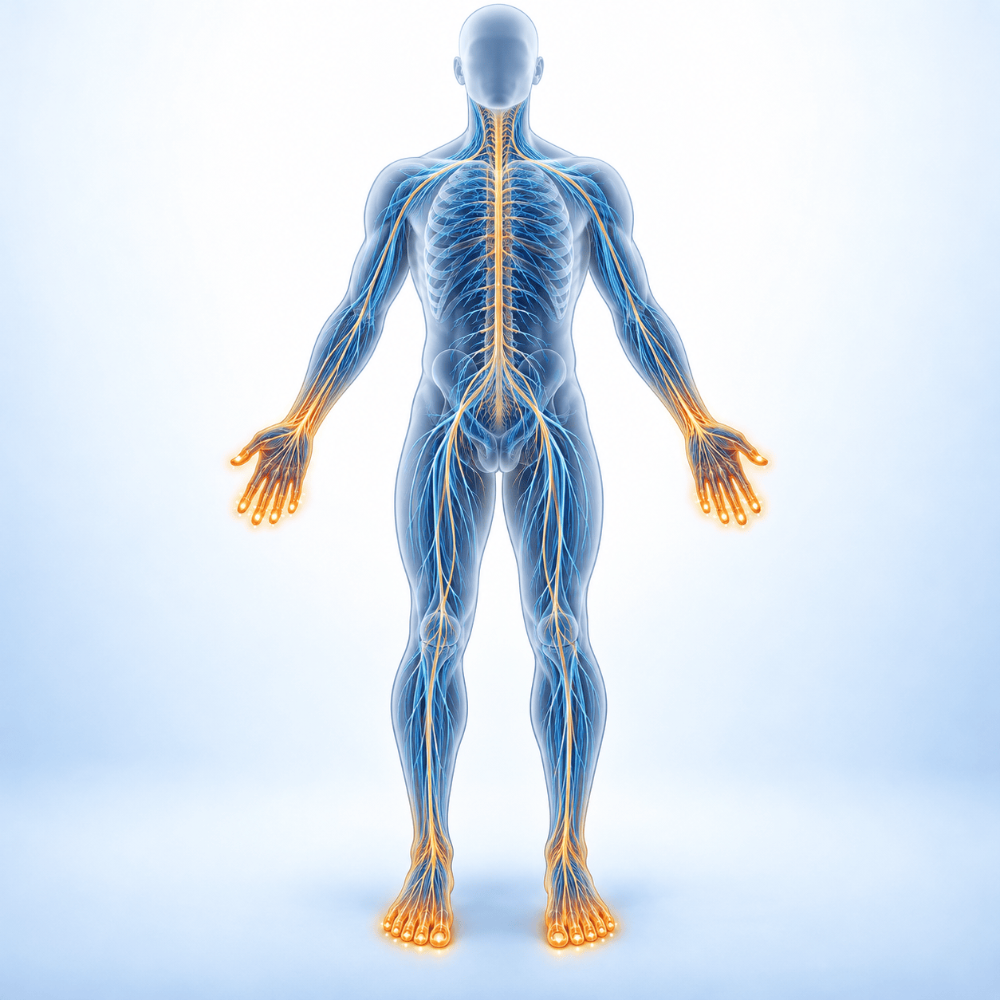

이런 증상으로 나타납니다
이런 증상으로 나타납니다

말초신경병증(CIPN)이란
주로 왼쪽·오른쪽 대칭으로 손끝과 발끝에서 시작하는 감각의 이상입니다. 저림, 이상한 감각(이상감각), 통증이 나타납니다. 환자분들은 이렇게 표현하십니다.
- 손발이 차갑다
- 손발이 뜨겁다
- 운동화 안에 모래 같은 것이 들어 있다
- 장판을 깔아 놓은 것 같다
몸의 위치를 느끼는 감각(고유감각)까지 영향을 받으면 걷기가 불안정해져 낙상에 주의해야 합니다. 단추 채우기·걷기가 어렵거나, 일어설 때 어지럽거나, 변비가 생기는 경우도 있습니다.
손발 피부에 물집이 생기고 벗겨지는 ‘손발증후군’은 다른 부작용으로, 보습이 중요합니다.
 원인이 되는 항암제와 경과
원인이 되는 항암제와 경과
| 약제군 | 대표 약 | 특징 |
|---|---|---|
| 탁산(Taxane) | 파클리탁셀 · 도세탁셀 | 유방·폐·위·난소암에서 흔하며 손발 끝 저림, 관절·근육통이 함께 올 수 있습니다 |
| 백금계 | 옥살리플라틴 · 시스플라틴 · 카보플라틴 | 옥살리플라틴은 찬 자극으로 생기는 급성 이상감각과 쌓이는 만성 신경병증이 있습니다 |
| 빈카알칼로이드 | 빈크리스틴 · 빈블라스틴 | 운동신경·자율신경까지 영향을 줄 수 있어 변비가 동반될 수 있습니다 |
| 그 밖의 약 | 에리불린(유방암) · 보르테조밉(다발골수종) | 엔포투맙 베도틴 같은 항체-약물 접합체의 MMAE 성분도 주요 원인입니다 |
약이 쌓인 양(누적 용량)에 비례해 생기고, 회복까지 수개월~2년이 걸립니다. 백금계·탁산 치료 후 4~5년이 지나도 남아 있는 분들이 있습니다.
 먼저 기억할 3가지
먼저 기억할 3가지
1예방 약은 아직 없습니다
수많은 연구가 있었지만 예방에 효과가 입증된 약은 없습니다. 비타민·가바펜틴을 미리 먹는 것은 권하지 않습니다.
2통증은 치료할 수 있습니다
증상이 나타나면 치료합니다. 통증이 있는 경우 가장 근거가 확립된 약은 둘록세틴입니다.
3저림 자체는 약 효과가 제한적
무감각·저림은 약으로 크게 좋아지지 않을 수 있어 기대치를 맞추고 안전 교육을 받는 것이 핵심입니다.
항암 담당 의사에게 알려야 할 때
- 일상 기능을 해치는 중등도 이상의 신경병증으로 진행했을 때
- 빠르게 나빠지거나, 근력이 떨어지는 증상(운동신경 침범)이 함께 생길 때
- 항암제를 줄이거나 미루거나 중단하는 상의가 필요한 시점일 때
- 약을 써도 통증이 조절되지 않을 때